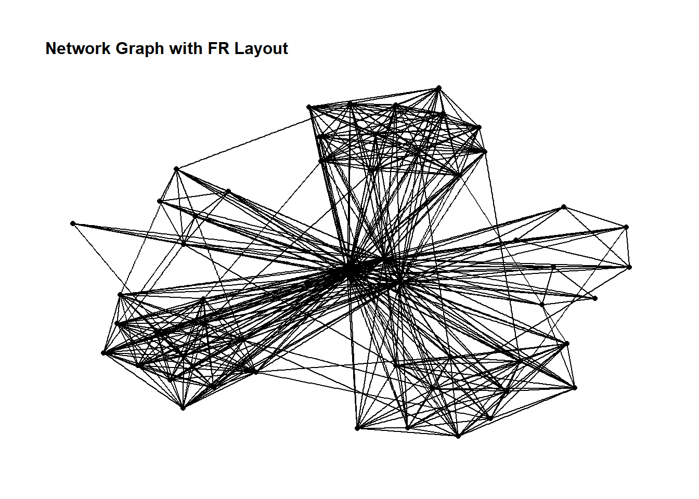
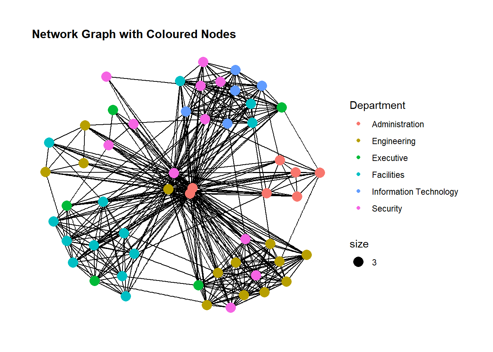
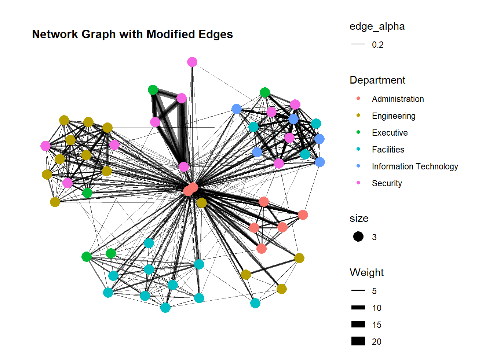
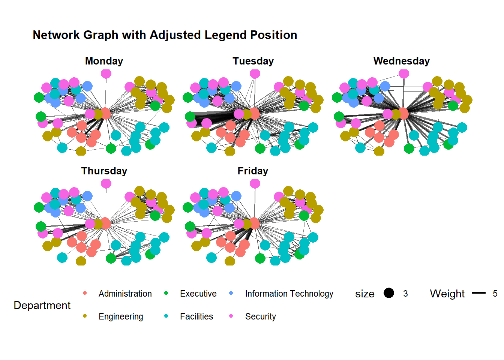
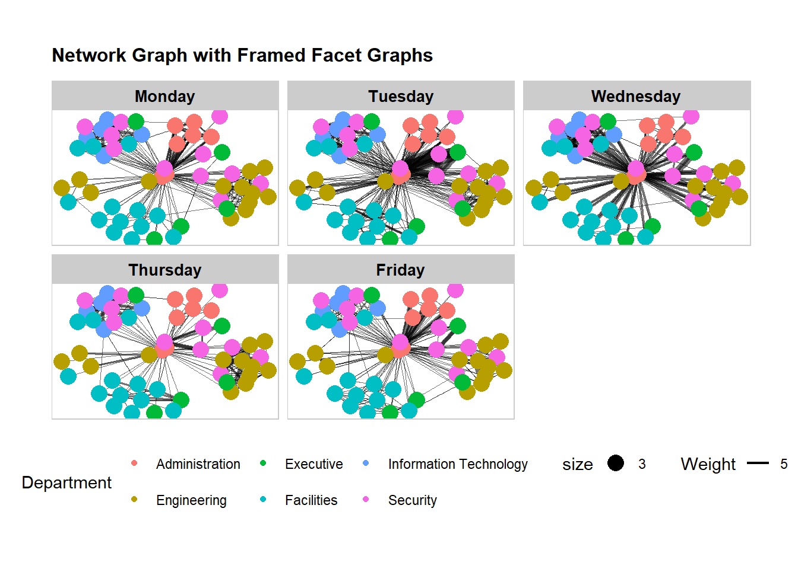
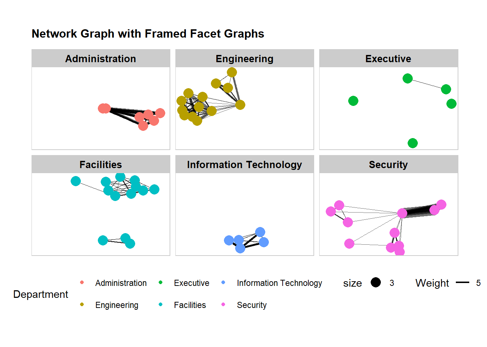
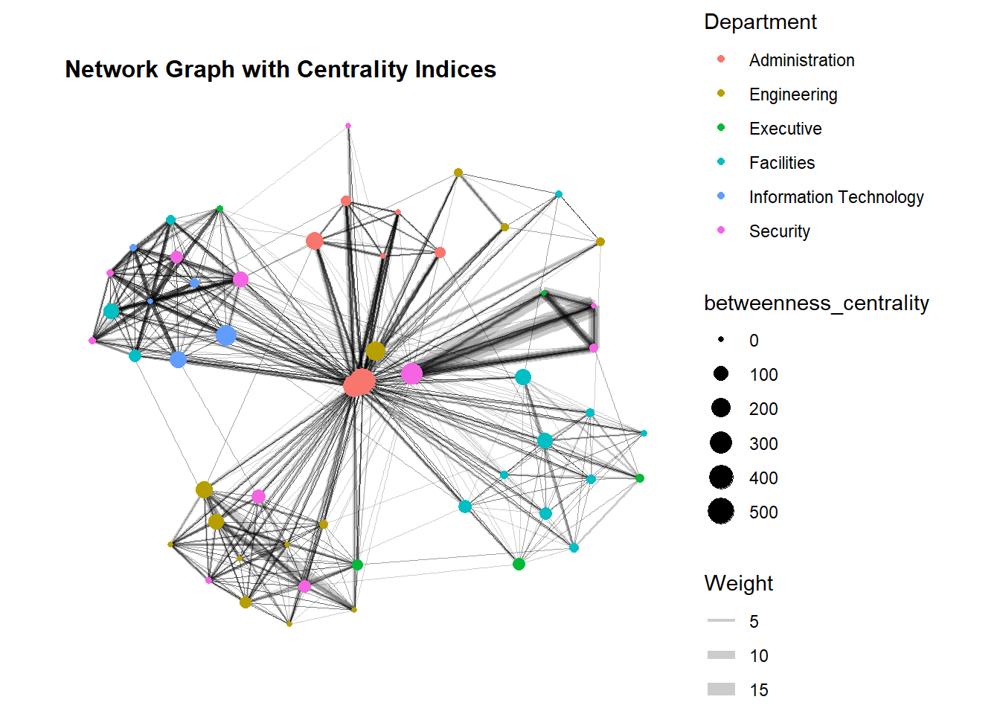
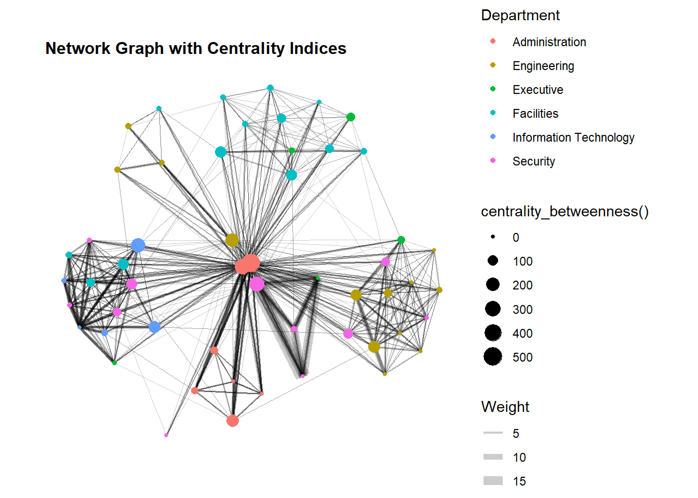

pacman::p_load(tidyverse, lubridate, clock,
igraph, tidygraph, ggraph, visNetwork,
graphlayouts)Hands-on Exercise 08 - Modelling, Visualising, and Analysing Network Data
1. Overview
In this eighth lesson, we learn to model, analyse, and visualise network data on R. Network visualisation is the process of visually presenting networks of connected entities as links and nodes.
2. Getting Started
2.1. Installing and Loading Packages
We will use the following R packages in addition to tidyverse and lubridate for this exercise:
igraph: collection of network analysis toolstidygraph: a tidy API for graph or network manipulationggraph:ggplot2extension supporting relational data structures such as netowkrs, graphs, and trees.visNetwork: R package for interactive network visualisation
The packages to be used can be installed and loaded into the R environment using the p_load() function from the pacman package:
2.2. Import Data
Next, we will read the data provided by the Course Instructor into the R environment. The datasets are from an oil exploration and extraction company, one set contains the nodes data while the second set contains the edges or link data.
Both sets are in csv format, and We will use the read_csv() function from the readr package found in tidyverse to import both datasets into R.
gas_nodes <- read_csv("data/GAStech_email_node.csv")
glimpse(gas_nodes)Rows: 54
Columns: 4
$ id <dbl> 1, 2, 3, 4, 5, 6, 7, 44, 45, 46, 8, 9, 10, 11, 12, 13, 14, …
$ label <chr> "Mat.Bramar", "Anda.Ribera", "Rachel.Pantanal", "Linda.Lago…
$ Department <chr> "Administration", "Administration", "Administration", "Admi…
$ Title <chr> "Assistant to CEO", "Assistant to CFO", "Assistant to CIO",…Using glimpse() to view the data, we can see that the nodes dataset contains 54 records with 4 columns.
gas_edges <- read_csv("data/GAStech_email_edge-v2.csv")
glimpse(gas_edges)Rows: 9,063
Columns: 8
$ source <dbl> 43, 43, 44, 44, 44, 44, 44, 44, 44, 44, 44, 44, 26, 26, 26…
$ target <dbl> 41, 40, 51, 52, 53, 45, 44, 46, 48, 49, 47, 54, 27, 28, 29…
$ SentDate <chr> "6/1/2014", "6/1/2014", "6/1/2014", "6/1/2014", "6/1/2014"…
$ SentTime <time> 08:39:00, 08:39:00, 08:58:00, 08:58:00, 08:58:00, 08:58:0…
$ Subject <chr> "GT-SeismicProcessorPro Bug Report", "GT-SeismicProcessorP…
$ MainSubject <chr> "Work related", "Work related", "Work related", "Work rela…
$ sourceLabel <chr> "Sven.Flecha", "Sven.Flecha", "Kanon.Herrero", "Kanon.Herr…
$ targetLabel <chr> "Isak.Baza", "Lucas.Alcazar", "Felix.Resumir", "Hideki.Coc…Using glimpse to view the data, it is observed that the edges dataset contains 9063 observations and 8 columns. However, we can also see that the “SentDate” field is treated as “chr” data type instead of “date”. Hence, we have to change the data type.
2.3. Data Preparation
2.3.1. Wrangling Time Data
We can use the dmy() function from the lubdridate package to convert the wrongly classified SentDate field into “date” format.
gas_edges <- gas_edges %>%
mutate(SentDate = dmy(SentDate)) %>%
mutate(Weekday = wday(SentDate,
label = TRUE,
abbr = FALSE))
glimpse(gas_edges)Rows: 9,063
Columns: 9
$ source <dbl> 43, 43, 44, 44, 44, 44, 44, 44, 44, 44, 44, 44, 26, 26, 26…
$ target <dbl> 41, 40, 51, 52, 53, 45, 44, 46, 48, 49, 47, 54, 27, 28, 29…
$ SentDate <date> 2014-01-06, 2014-01-06, 2014-01-06, 2014-01-06, 2014-01-0…
$ SentTime <time> 08:39:00, 08:39:00, 08:58:00, 08:58:00, 08:58:00, 08:58:0…
$ Subject <chr> "GT-SeismicProcessorPro Bug Report", "GT-SeismicProcessorP…
$ MainSubject <chr> "Work related", "Work related", "Work related", "Work rela…
$ sourceLabel <chr> "Sven.Flecha", "Sven.Flecha", "Kanon.Herrero", "Kanon.Herr…
$ targetLabel <chr> "Isak.Baza", "Lucas.Alcazar", "Felix.Resumir", "Hideki.Coc…
$ Weekday <ord> Monday, Monday, Monday, Monday, Monday, Monday, Monday, Mo…We can confirm that the data type of the SentDate field has been corrected.
2.3.2. Wrangling Attributes
Examining the gas_edges dataframe, we can see that it contains individual email records. We will aggregate the data by date, source (sender), target (receiver), main subject, and day of the week.
gas_edges_agg <- gas_edges %>%
filter(MainSubject == "Work related") %>%
group_by(source, target, Weekday) %>%
summarise(Weight = n()) %>%
filter(source != target) %>%
filter(Weight > 1) %>%
ungroup()
glimpse(gas_edges_agg)Rows: 1,456
Columns: 4
$ source <dbl> 1, 1, 1, 1, 1, 1, 1, 1, 1, 1, 1, 1, 1, 1, 1, 1, 1, 1, 1, 1, 1,…
$ target <dbl> 2, 2, 2, 2, 3, 3, 3, 3, 4, 4, 4, 4, 5, 5, 5, 5, 6, 6, 6, 6, 7,…
$ Weekday <ord> Monday, Tuesday, Wednesday, Friday, Monday, Tuesday, Wednesday…
$ Weight <int> 4, 3, 5, 8, 4, 3, 5, 8, 4, 3, 5, 8, 4, 3, 5, 8, 4, 3, 5, 8, 4,…3. Create Network Objects Using tidygraph
In this section, we learn to create a network graph data model using the tidygraph package.
Two functions in the tidygraph package can be used to create network objects: - tbl_graph() creates a tbl_graph network object from nodes and edges data - as_tbl_graph() converts network data and objects to a tbl_graph network.
Furthermore, all dplyr verbs can be applied to tbl_graph objects. The activate() verb from tidygraph serves as a switch between tibbles for nodes and edges.
3.1. Using tbl_graph() to Build tidygraph Data Model
gas_graph <- tbl_graph(nodes = gas_nodes,
edges = gas_edges_agg,
directed = TRUE)
gas_graph# A tbl_graph: 54 nodes and 1456 edges
#
# A directed multigraph with 1 component
#
# Node Data: 54 × 4 (active)
id label Department Title
<dbl> <chr> <chr> <chr>
1 1 Mat.Bramar Administration Assistant to CEO
2 2 Anda.Ribera Administration Assistant to CFO
3 3 Rachel.Pantanal Administration Assistant to CIO
4 4 Linda.Lagos Administration Assistant to COO
5 5 Ruscella.Mies.Haber Administration Assistant to Engineering Group Mana…
6 6 Carla.Forluniau Administration Assistant to IT Group Manager
7 7 Cornelia.Lais Administration Assistant to Security Group Manager
8 44 Kanon.Herrero Security Badging Office
9 45 Varja.Lagos Security Badging Office
10 46 Stenig.Fusil Security Building Control
# ℹ 44 more rows
#
# Edge Data: 1,456 × 4
from to Weekday Weight
<int> <int> <ord> <int>
1 1 2 Monday 4
2 1 2 Tuesday 3
3 1 2 Wednesday 5
# ℹ 1,453 more rows3.2. Changing the Active Object
The nodes tibble data frame is activated by default, and this can be changed by using the activate() function.
gas_graph %>%
activate(edges) %>%
arrange(desc(Weight))# A tbl_graph: 54 nodes and 1456 edges
#
# A directed multigraph with 1 component
#
# Edge Data: 1,456 × 4 (active)
from to Weekday Weight
<int> <int> <ord> <int>
1 40 41 Tuesday 23
2 40 43 Tuesday 19
3 41 43 Tuesday 15
4 41 40 Tuesday 14
5 42 41 Tuesday 13
6 42 40 Tuesday 12
7 42 43 Tuesday 11
8 43 42 Wednesday 11
9 36 32 Wednesday 9
10 40 41 Monday 9
# ℹ 1,446 more rows
#
# Node Data: 54 × 4
id label Department Title
<dbl> <chr> <chr> <chr>
1 1 Mat.Bramar Administration Assistant to CEO
2 2 Anda.Ribera Administration Assistant to CFO
3 3 Rachel.Pantanal Administration Assistant to CIO
# ℹ 51 more rows4. Plotting Static Network Graphs with ggraph
4.1. Basic Network Graph
A network graph can be plotted using three functions: ggraph(), geom_edge_link(), and geom_node_point().
ggraph(gas_graph) +
geom_edge_link() +
geom_node_point() +
ggtitle("Basic Network Graph") +
theme(plot.title = element_text(size = 12))4.2. Customising Network Graphs
ggraph introduces a special ggplot theme, theme_graph(), suitable for network graphs. This theme removes axes, grids, borders and changes font to Arial Narrow.
g <- ggraph(gas_graph) +
geom_edge_link(aes()) +
geom_node_point(aes()) +
ggtitle("Network Graph with Theme Applied")
g +
theme_graph() +
theme(plot.title = element_text(size = 12))
theme_graph() also makes it easy to change the colour on the network graph:
g <- ggraph(gas_graph) +
geom_edge_link(aes(colour = "grey50")) +
geom_node_point(aes(colour = "grey40")) +
ggtitle("Network Graph with Colours Changed")
g +
theme_graph(background = "grey20",
text_colour = "white") +
theme(plot.title = element_text(size = 12))ggraph supports many layouts:star, circle, nicely (default), dh, gem, graphopt, grid, mds, spahere, randomly, fr, kk, drl and lgl. In the example below, we use the “Fruchterman and Reingold” layout.
g <- ggraph(gas_graph,
layout = "fr") +
geom_edge_link(aes()) +
geom_node_point(aes()) +
ggtitle("Network Graph with FR Layout")
g +
theme_graph() +
theme(plot.title = element_text(size = 12))
We can use the aes argument to change the colour and size of each node according to a variable:
g <- ggraph(gas_graph,
layout = "nicely") +
geom_edge_link(aes()) +
geom_node_point(aes(color = Department,
size = 3)) +
ggtitle("Network Graph with Coloured Nodes")
g +
theme_graph() +
theme(plot.title = element_text(size = 12))
The geom_node_point() has similar functionalities as the geom_point() function of ggplot2, which allows for the customisations in the shape, colour and size of the nodes.
We can use the aes argument to change the width of the edges according to a variable:
g <- ggraph(gas_graph,
layout = "nicely") +
geom_edge_link(aes(width = Weight,
alpha = 0.2)) +
scale_edge_width(range = c(0.1, 5)) +
geom_node_point(aes(color = Department,
size = 3)) +
ggtitle("Network Graph with Modified Edges")
g +
theme_graph() +
theme(plot.title = element_text(size = 12))
geom_edge_link() draws edges as straight lines between the start and end nodes. It can take in arguments such as width to map line widths that are proportionate to a assigned variable.
4.3. Creating Facet Graphs
We can use the facet_edges() function to facet edges and nodes are repeated in every panel.
set_graph_style()
g <- ggraph(gas_graph,
layout = "nicely") +
geom_edge_link(aes(width = Weight,
alpha = 0.2)) +
scale_edge_width(range = c(0.1, 5)) +
geom_node_point(aes(color = Department,
size = 3)) +
ggtitle("Network Graph with Facet Edges") +
theme(plot.title = element_text(size = 12))
g + facet_edges(~Weekday)ggplot2 functions such as theme() and legend.position() can be used to make further aesthetic adjustments to the plot.
set_graph_style()
g <- ggraph(gas_graph,
layout = "nicely") +
geom_edge_link(aes(width = Weight,
alpha = 0.2)) +
scale_edge_width(range = c(0.1, 5)) +
geom_node_point(aes(color = Department,
size = 3)) +
ggtitle("Network Graph with Adjusted Legend Position") +
theme(plot.title = element_text(size = 12),
legend.position = "bottom")
g + facet_edges(~Weekday)
We can add frames to each graph using the following code:
set_graph_style()
g <- ggraph(gas_graph,
layout = "nicely") +
geom_edge_link(aes(width = Weight,
alpha = 0.2)) +
scale_edge_width(range = c(0.1, 5)) +
geom_node_point(aes(color = Department,
size = 3)) +
ggtitle("Network Graph with Framed Facet Graphs") +
theme(plot.title = element_text(size = 12)) +
theme(plot.title = element_text(size = 12),
legend.position = "bottom")
g +
facet_edges(~Weekday) +
th_foreground(foreground = "grey80",
border = TRUE)
Finally, we can use the facet_nodes() function to facet nodes and edges are drawn if both terminal nodes are present in a panel.
set_graph_style()
g <- ggraph(gas_graph,
layout = "nicely") +
geom_edge_link(aes(width = Weight,
alpha = 0.2)) +
scale_edge_width(range = c(0.1, 5)) +
geom_node_point(aes(color = Department,
size = 3)) +
ggtitle("Network Graph with Framed Facet Graphs") +
theme(plot.title = element_text(size = 12),
legend.position = "bottom")
g +
facet_nodes(~Department) +
th_foreground(foreground = "grey80",
border = TRUE)
5. Network Metrics Analysis
5.1. Computing Centrality Indices
Centrality measures are a collection of statistical indices used to describe the relative importance of the actors to a network. There are four well-known centrality measures: degree, betweenness, closeness, and eigenvector. In this example, we use betweenness to compute the centrality index.
g <- gas_graph %>%
mutate(betweenness_centrality = centrality_betweenness()) %>%
ggraph(layout = "fr") +
geom_edge_link(aes(width = Weight),
alpha = 0.2) +
scale_edge_width(range = c(0.1, 5)) +
geom_node_point(aes(color = Department,
size = betweenness_centrality)) +
ggtitle("Network Graph with Centrality Indices")
g +
theme_graph() +
theme(plot.title = element_text(size = 12))
5.2. Accessing Centrality Measures Directly
From ggraph v2.0 onward, centrality measures can be accessed directly from ggraph without having to precompute and store the centrality measures.
g <- gas_graph %>%
ggraph(layout = "fr") +
geom_edge_link(aes(width = Weight),
alpha = 0.2) +
scale_edge_width(range = c(0.1, 5)) +
geom_node_point(aes(color = Department,
size = centrality_betweenness())) +
ggtitle("Network Graph with Centrality Indices")
g +
theme_graph() +
theme(plot.title = element_text(size = 12))
5.3. Visualising Community
The tidygraph package inherits many of the community detection algorithms available in the igraph package: - Edge-betweenness (group_edge_betweenness) - Leading eigenvector (group_leading_eigen) - Fast-greedy (group_fast_greedy) - Louvain (group_louvain), Walktrap (group_walktrap) - Label propagation (group_label_prop) - InfoMAP (group_infomap) - Spinglass (group_spinglass), and - Optimal (group_optimal).
Some community algorithms are designed to take into account direction or weight, while others ignore it. In this example, we use the group_edge_betweenness() to visualise community:
g <- gas_graph %>%
mutate(community = as.factor(group_edge_betweenness(
weights = Weight,
directed = TRUE))) %>%
ggraph(layout = "fr") +
geom_edge_link(aes(width = Weight),
alpha = 0.2) +
scale_edge_width(range = c(0.1, 5)) +
geom_node_point(aes(color = community)) +
ggtitle("Network Graph with Betweenness Community")
g +
theme_graph() +
theme(plot.title = element_text(size = 12))6. Building Interactive Network Graphs with visNetwork
We can use the vizNetwork package to create interactive network graphs. The vizNetwork() function uses a nodes list and a edges list to create an interactive graph.
- The nodes list must include an ‘id’ column
- The edges list must include ‘to’ and ‘from’ columns
6.1. Data Preparation
We prepare the data to create an interactive network graph:
gas_edges_agg <- gas_edges %>%
left_join(gas_nodes, by = c("sourceLabel" = "label")) %>%
rename(from = id) %>%
left_join(gas_nodes, by = c("targetLabel" = "label")) %>%
rename(to = id) %>%
filter(MainSubject == "Work related") %>%
group_by(from, to) %>%
summarise(weight = n()) %>%
filter(from != to) %>%
filter(weight > 1) %>%
ungroup()6.2. Plotting An Interactive Network Graph
visNetwork(gas_nodes, gas_edges_agg)6.3. Changing Layout
We can change the layout as with the static plot. We use the FR layout again in this example:
visNetwork(gas_nodes, gas_edges_agg) %>%
visIgraphLayout(layout = "layout_with_fr")6.4. Changing Nodes Attributes
visNetwork() looks for a field called “group” in the nodes object to assign the same colour to nodes of the same values in the “group” field. Hence, we have to change the desired column field name to “group”.
gas_nodes <- gas_nodes %>%
rename(group = Department)
visNetwork(gas_nodes, gas_edges_agg) %>%
visIgraphLayout(layout = "layout_with_fr") %>%
visLegend() %>%
visLayout(randomSeed = 123)6.4. Changing Edges Attributes
visEdges() can be used to adjust the attributes of edges, such as defining arrows and smoothing curves.
visNetwork(gas_nodes, gas_edges_agg) %>%
visIgraphLayout(layout = "layout_with_fr") %>%
visEdges(arrows = "to",
smooth = list(enabled = TRUE, type = "curvedCW")) %>%
visLegend() %>%
visLayout(randomSeed = 123)6.5. Adding Interactivity
We can use visOptions() to add interactive features to the visualisation:
visNetwork(gas_nodes, gas_edges_agg) %>%
visIgraphLayout(layout = "layout_with_fr") %>%
visOptions(highlightNearest = TRUE,
nodesIdSelection = TRUE) %>%
visLegend() %>%
visLayout(randomSeed = 123)